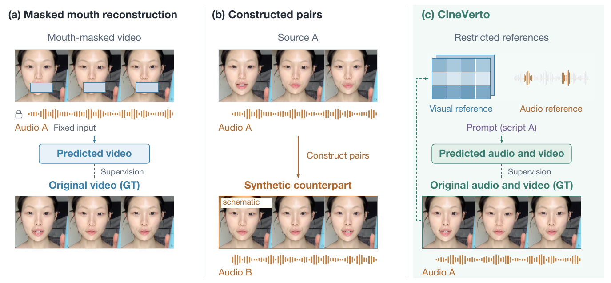
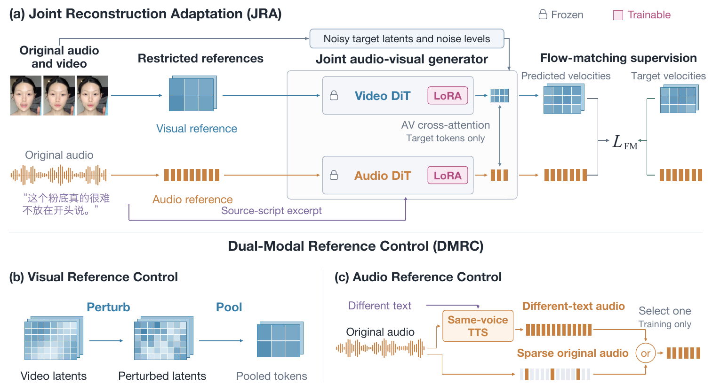

Anonymous submission · supplementary results
CineVerto
Script-Driven Audio-Visual Dubbing through Reconstruction
Given a video and a new script, CineVerto jointly generates the new speech and the matching mouth movements while keeping the speakers, voices, and scene.
Comparison with Baselines
Select a clip. Each video has its own controls; only one video plays sound at a time. Hide a column to compare two methods side by side.
More CineVerto Results
Single speakers, visible conversations, and offscreen narration in Chinese and English.
One Clip, Many Languages
The same Chinese clip dubbed into 16 target languages by one CineVerto model, trained without multilingual paired data.
Method
CineVerto adapts a pretrained joint audio-visual generator by reconstructing the original synchronized audio and video, so no dubbed target videos are needed. Dual-Modal Reference Control restricts the source words in the audio reference and the fine mouth motion in the visual reference, which prevents the model from copying the source. A structured prompt assigns each line to its speaker, speaking interval, and onscreen or offscreen role; at inference the target script replaces the source script and the model generates the new audio and video jointly.


Citation
@inproceedings{cineverto2027,
title = {CineVerto: Script-Driven Audio-Visual Dubbing through Reconstruction},
author = {Anonymous},
year = {2027}
}